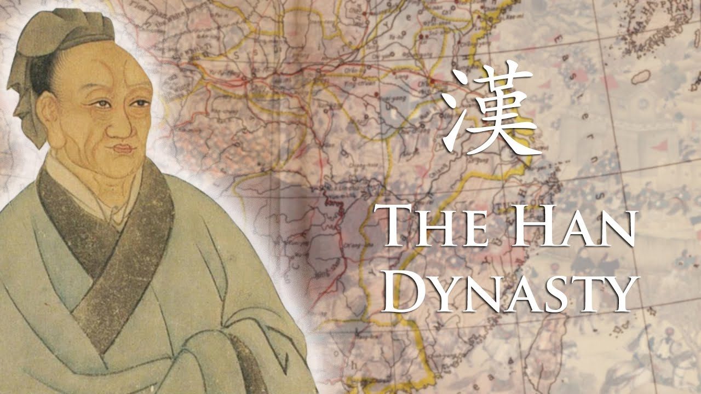
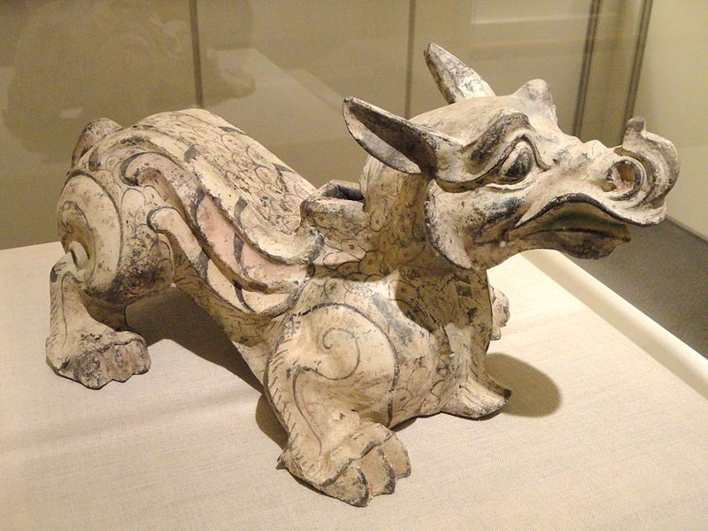
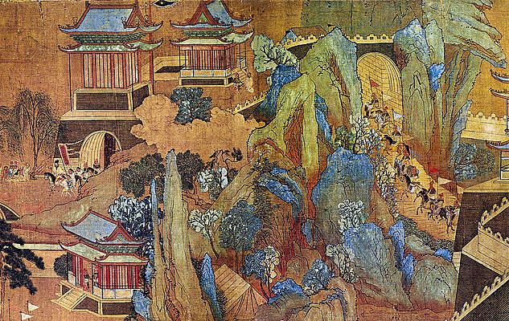
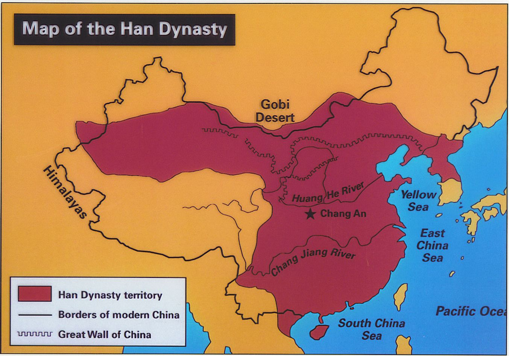

A great wish of mine ever since I was a wee little boy, was to visit Ancient China during one of it's most prosperous times.
It's said that it was actually during the Han dynasty, that the country was able to truly develop it's rich and interesting culture, thus,
lets take a quick dive into one of the places that I have always, always, ALWAYS...wanted to visit
The Han Dynasty ruled China from 206 B.C. to 220 A.D. and was the second imperial dynasty of China. Though tainted by deadly dramas within the royal court, it is also known for its promotion of Confucianism as the state religion and opening the Silk Road trade route to Europe, permanently altering the course of Chinese history. Han Dynasty art and inventions like paper still influence the world today.
Now that you have a basic understanding of some important events that happened during this great period of Chinese history, let's get into the great places to visit and some other interesting bits!
One of my "favorite" things about ancient China, is just it's beauty. Beauty in scenery, people, and yes, art. Some of the key materials Han artists used include bronze, glazed and unglazed ceramics, jade, paint, stone, and wood. Painting and sculpture were widely practiced and the dynasty benefited considerably from known technology like high-heat kilns and well-developed glazes.
Of course, while I loved the way pottery artists were able to create such beautiful work of art for their time, art comes in all forms, such as paintings and even calligraphy! Below is a great example of the unique painting style that artists of the time were known for.
The geography of the Han Dynasty is very exotic. The Han Dynasty is divided into two dynasties: the Western Han Dynasty and the Eastern Han Dynasty. In the Eastern Han Dynasty, they have a great deal on farmlands which is good for the land, the farmers, and food. Also, lots of irrigation projects were built for the Yellow River, but over the 800 years, it changed.
The inventions of the Han Dynasty are what have made China, China today. The Han Dynasty inventions were the the greatest inventions, not just in Chinese, but across the globe. The Hans invented many things including the magnetic compasses, loom, paper, the silk road, wheelbarrow, cast iron, hot air balloon, and the seismograph. I'm also considering the Silk Road an "invention" because it was made as a means of trading silk and, eventually, much more.
Do you find yourself utterly intrigued now after learning all about the wonders of Ancient China's Han Dynasty and yearning to just travel there right now?? Well, silly, Ancient China no longer exists! A big bummer, I know, but you can always read books or just watch a poorly produced Chinese movie, and it'll almost feel like you're really there!